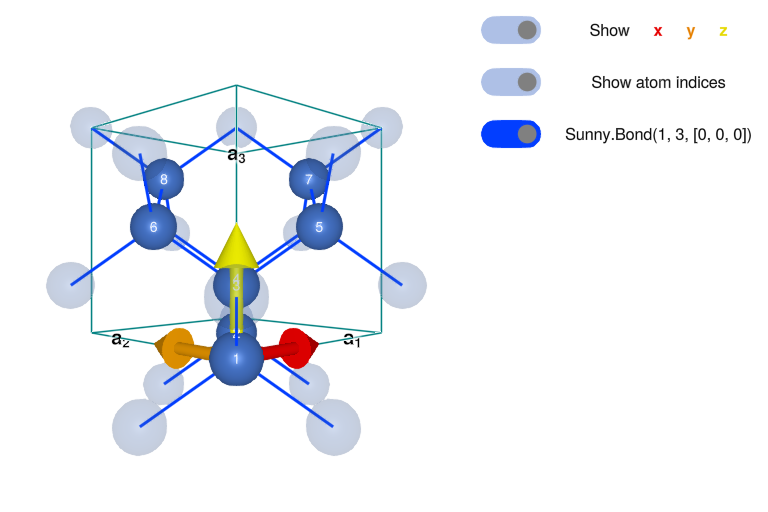
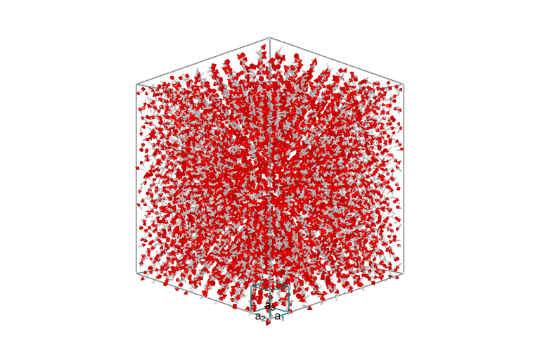
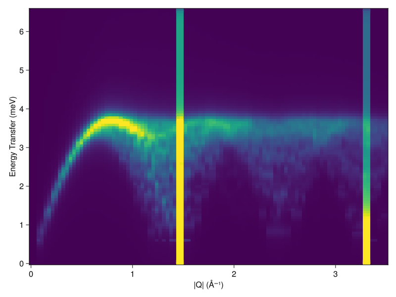
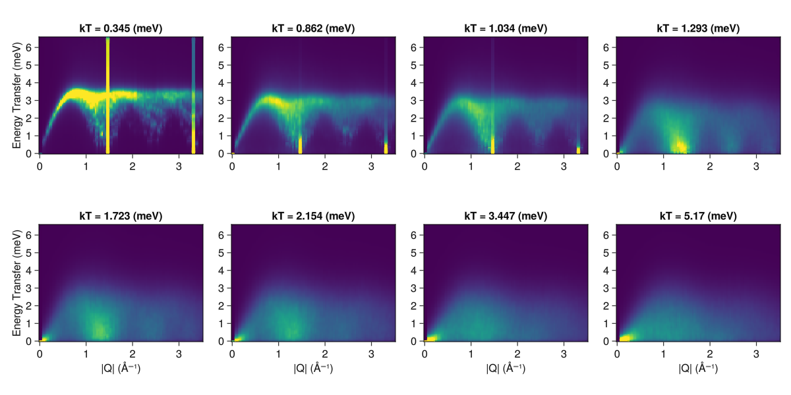

Powder Averaged CoRh₂O₄ at Finite Temperature
Inspired by: Ge et al., Phys. Rev. B 96, 064413 (2017)
Authors: Martin Mourigal, David Dahlbom
Date: October 28, 2023 (Sunny 0.5.5)
Goal: This script is to calculate the temperature dependence of the magnon excitations in the spin-3/2 Heisenberg Diamond Antiferromagnet and compare to powder-averaged results obtained for the compound CoRh₂O₄
Load pacakges.
using Sunny, GLMakie, ProgressMeter, Statistics, Random, Brillouin
cif_path = pkgdir(Sunny, "examples", "longer_examples", "CoRh2O4_#109301.cif");Define custom functions.
The function quench! randomizes the spins of a given System, fixes a target temperature, and lets the system relax at this temperature for nrelax integration steps.
function quench!(sys, integrator; kTtarget, nrelax)
randomize_spins!(sys);
integrator.kT = kTtarget;
prog = Progress(nrelax; dt=10.0, desc="Quenched and now relaxing: ", color=:green);
for _ in 1:nrelax
step!(sys, integrator)
next!(prog)
end
endquench! (generic function with 1 method)dwell! takes a System, sets a target temperature, and has the system dwell at this temperature for ndwell integration steps.
function dwell!(sys, integrator; kTtarget, ndwell)
integrator.kT = kTtarget;
prog = Progress(ndwell; dt=10.0, desc="Dwelling: ", color=:green);
for _ in 1:ndwell
step!(sys, integrator)
next!(prog)
end
enddwell! (generic function with 1 method)anneal! takes a temperature schedule and cools the System through it, with ndwell steps of the integrator at each temperature in the schedule. Returns the energy at the end of the dwell for each scheduled temperature.
function anneal!(sys, integrator; kTschedule, ndwell)
nspins = prod(size(sys.dipoles));
ensys = zeros(length(kTschedule))
prog = Progress(ndwell*length(kTschedule); dt=10.0, desc="Annealing: ", color=:red);
for (i, kT) in enumerate(kTschedule)
integrator.kT = kT
for _ in 1:ndwell
step!(sys, integrator)
next!(prog)
end
ensys[i] = energy(sys)
end
return ensys/nspins
endanneal! (generic function with 1 method)sample_sf! samples a structure factor, which may be either an instant or dynamical structure factor. The integrator is run ndecorr times before each one of the samples is taken.
function sample_sf!(sf, sys, integrator; nsamples, ndecorr)
prog = Progress(nsamples*ndecorr; dt=10.0, desc="Sampling SF: ", color=:red);
for _ in 1:nsamples
for _ in 1:ndecorr
step!(sys, integrator)
next!(prog)
end
add_sample!(sf, sys) # Accumulate the newly sampled structure factor into `sf`
end
endsample_sf! (generic function with 1 method)powder_average powder averages a structure factor. Works for both instant and dynamical structure factors. To prevent smearing, removes Bragg peaks before introducing energy broadening. Bragg peaks are added back at ω=0 after broadening.
function powder_average(sc, rs, npts, formula; η=0.1)
prog = Progress(length(rs); dt=10., desc="Powder Averaging: ", color=:blue)
ωs = available_energies(sc)
output = zeros(Float64, length(rs), length(ωs))
for (i, r) in enumerate(rs)
qs = reciprocal_space_shell(sc.crystal, r, npts)
vals = intensities_interpolated(sc, qs, formula)
bragg_idxs = findall(x -> x > maximum(vals)*0.9, vals)
bragg_vals = vals[bragg_idxs]
vals[bragg_idxs] .= 0
vals = broaden_energy(sc, vals, (ω,ω₀)->lorentzian(ω-ω₀, η))
vals[bragg_idxs] .= bragg_vals
output[i,:] .= mean(vals, dims=1)[1,:]
next!(prog)
end
return output
endpowder_average (generic function with 1 method)System Definition for CoRh₂O₄
Define the crystal structure of CoRh₂O₄ in the conventional cell.
xtal = Crystal(cif_path; symprec=1e-4)
magxtal = subcrystal(xtal,"Co1")
view_crystal(magxtal, 6.0)
Print the symmetry-allowed interactions.
print_symmetry_table(magxtal, 4.0)Atom 1
Type 'Co1', position [0, 0, 0], multiplicity 8
Allowed g-tensor: [A 0 0
0 A 0
0 0 A]
Allowed anisotropy in Stevens operators:
c₁*(𝒪[4,0]+5𝒪[4,4]) +
c₂*(𝒪[6,0]-21𝒪[6,4])
Sunny.Bond(1, 3, [0, 0, 0])
Distance 3.6784429025744, coordination 4
Connects 'Co1' at [0, 0, 0] to 'Co1' at [1/4, 1/4, 1/4]
Allowed exchange matrix:[A B B
B A B
B B A]
Assign local Hilbert space
S = 3/2
lhs = [SpinInfo(1; S, g=2)]
formfactors = [FormFactor("Co2")];Create System and randomize it
sunmode = :dipole
latsize = (10,10,10)
sys = System(magxtal, latsize, lhs, sunmode; seed=1)
randomize_spins!(sys)
plot_spins(sys)
Define exchange interactions.
scaleJ = 0.63
valJ1 = 1.00*scaleJ
set_exchange!(sys, valJ1, Bond(1, 3, [0, 0, 0]));Thermalize system to an ordered, yet finite temperature, state
Define Langevin Integrator and Initialize it
Δt0 = 0.05/abs(scaleJ*S); ## Time steps in Langevin
λ0 = 0.1; ## Langevin damping, usually 0.05 or 0.1 is good.
kT0 = 0.01*abs(scaleJ*S); ## Initialize at some temperature
integrator = Langevin(Δt0; λ=λ0, kT=kT0);Thermalization Option 1: Quench the system from infinite temperature to a target temperature. Note: this may lead to a poorly thermalized sample
quench!(sys, integrator; kTtarget=kT0, nrelax=10000);Option 2: Anneal (according to a temperature schedule) then dwell once we've reach base temperature. (Uncomment to execute.)
# kTs = [abs(scaleJ)*valS*100 * 0.9^k for k in 0:100]
# anneal!(sys,integrator;kTschedule=kTs,ndwell=500)
# dwell!(sys,integrator;kTtarget=kTs[end],ndwell=2000)Plot the resulting spin system to check ordering in real space
plot_spins(sys)
Calculation of Neutron Scattering Responses
Fourier transformed instantaneous two-point correlation functions
Calculate the instantaneous/equal-time structure factor.
eqsf = instant_correlations(sys)SampledCorrelations (6.252 MiB)
[S(q) | 0 sample]
Lattice: (10, 10, 10)×8
6 correlations in Dipole mode:
╔ ⬤ ⬤ ⬤ Sx
║ ⋅ ⬤ ⬤ Sy
╚ ⋅ ⋅ ⬤ Sz
If desired, add additional samples by decorrelating and then re-calculating the eqsf.
nsamples = 1
ndecorr = 1000
@time sample_sf!(eqsf, sys, integrator; nsamples=nsamples, ndecorr=ndecorr); 0.966485 seconds (1.89 M allocations: 118.815 MiB, 6.25% gc time, 50.12% compilation time)
Project onto a constant Q-Slice in momentum space.
nQpts = 200
Qxpts = range(-10.0, 10.0, length=nQpts)
Qypts = range(-10.0, 10.0, length=nQpts)
qz = 1.0
Qpts = [[qx, qy, qz] for qx in Qxpts, qy in Qypts]
instant_formula = intensity_formula(eqsf, :perp; formfactors)
iq = instant_intensities_interpolated(eqsf, Qpts, instant_formula);Plot the resulting I(Q)
heatmap(Qxpts, Qypts, iq;
colorrange = (0, maximum(iq)/20),
axis = (
xlabel="Momentum Transfer Qx (r.l.u)", xlabelsize=16,
ylabel="Momentum Transfer Qy (r.l.u)", ylabelsize=16,
aspect=true,
)
)
Dynamical and energy-integrated two-point correlation functions
Calculate the time traces and Fourier transform: Dynamical Structure Factor (first sample).
ωmax = 6.0 # Maximum energy to resolve
nω = 100 # Number of energies to resolve
sc = dynamical_correlations(sys; Δt=Δt0, nω=nω, ωmax=ωmax, process_trajectory=:symmetrize)
@time add_sample!(sc, sys) # Add a sample trajectory 5.471269 seconds (14.33 M allocations: 291.526 MiB, 0.75% gc time, 0.02% compilation time)
If desired, add additional decorrelated samples.
nsamples = 10
ndecorr = 1000
@time sample_sf!(sc, sys, integrator; nsamples=nsamples, ndecorr=ndecorr);Sampling SF: 27%|██████████▎ | ETA: 0:00:33[KSampling SF: 49%|██████████████████▊ | ETA: 0:00:25[KSampling SF: 68%|█████████████████████████▉ | ETA: 0:00:17[KSampling SF: 84%|████████████████████████████████ | ETA: 0:00:09[KSampling SF: 100%|██████████████████████████████████████| Time: 0:00:53[K
59.070784 seconds (143.58 M allocations: 2.866 GiB, 0.56% gc time, 0.24% compilation time)
Can use the Brillouin package for help on determining high symmetry points
kp = irrfbz_path(227,[[1,0,0], [0,1,0], [0,0,1]])
kpc = cartesianize(kp)KPath{3} (6 points, 2 paths, 8 points in paths):
points: :U => [1.570796, 6.283185, 1.570796]
:W => [3.141593, 6.283185, 0.0]
:K => [4.712389, 4.712389, 0.0]
:Γ => [0.0, 0.0, 0.0]
:L => [3.141593, 3.141593, 3.141593]
:X => [0.0, 6.283185, 0.0]
paths: [:Γ, :X, :U]
[:K, :Γ, :L, :W, :X]
basis: [-6.283185, 6.283185, 6.283185]
[6.283185, -6.283185, 6.283185]
[6.283185, 6.283185, -6.283185]Project onto a constant QE-Slice in momentum-energy space.
densQpts = 50
symQpts = [[0.75, 0.75, 0.00], # List of wave vectors that define a path
[0.00, 0.00, 0.00],
[0.50, 0.50, 0.50],
[0.50, 1.00, 0.00],
[0.00, 1.00, 0.00],
[0.25, 1.00, 0.25],
[0.00, 1.00, 0.00],
[0.00,-4.00, 0.00]]
(Qpts, xticks) = reciprocal_space_path(magxtal, symQpts, densQpts)
formula = intensity_formula(sc, :perp; formfactors, kT=integrator.kT)
iqw = intensities_interpolated(sc, Qpts, formula);If desired, broaden the sc in energy.
η = 0.1 ## Lorentzian energy broadening parameter
iqwc = broaden_energy(sc, iqw, (ω, ω₀) -> lorentzian(ω-ω₀, η));If desired, calculated the energy-integrated structure factor
iqt = instant_intensities_interpolated(sc, Qpts, formula);Plot the resulting I(Q,W).
ωs = available_energies(sc)
heatmap(1:size(iqwc, 1), ωs, iqwc;
colorrange = (0, maximum(iqwc)/20000.0),
axis = (;
xlabel="Momentum Transfer (r.l.u)",
ylabel="Energy Transfer (meV)",
xticks,
xticklabelrotation=π/5,
aspect = 1.4,
)
)
Projection into a powder-averaged neutron scattering intensity .
Qmax = 3.5
nQpts = 100
Qpow = range(0, Qmax, nQpts)
npoints = 100
pqw = powder_average(sc, Qpow, npoints, formula; η);Powder Averaging: 78%|█████████████████████████▊ | ETA: 0:00:03[KPowder Averaging: 100%|█████████████████████████████████| Time: 0:00:12[K
Plot resulting Ipow(|Q|,W).
heatmap(Qpow, ωs, pqw;
axis = (
xlabel="|Q| (Å⁻¹)",
ylabel="Energy Transfer (meV)",
aspect = 1.4,
),
colorrange = (0, 40.0)
)
Calculation of temperature-dependent powder average spectrum
Define a temperature schedule
kTs = [60 40 25 20 15 12 10 4] * Sunny.meV_per_K
pqw_res = []
for kT in kTs
dwell!(sys, integrator; kTtarget=kT, ndwell=1000);
sc_loc = dynamical_correlations(sys; Δt=Δt0, nω, ωmax, process_trajectory=:symmetrize);
add_sample!(sc_loc, sys)
formula = intensity_formula(sc, :perp; formfactors, kT)
push!(pqw_res, powder_average(sc_loc, Qpow, npoints, formula; η))
end┌ Warning: Assignment to `formula` in soft scope is ambiguous because a global variable by the same name exists: `formula` will be treated as a new local. Disambiguate by using `local formula` to suppress this warning or `global formula` to assign to the existing global variable.
└ @ ~/Research/SunnyContributed/contributed-docs/build/CoRh2O4-tutorial.md:7
Powder Averaging: 83%|███████████████████████████▍ | ETA: 0:00:02[KPowder Averaging: 100%|█████████████████████████████████| Time: 0:00:12[K
Powder Averaging: 83%|███████████████████████████▍ | ETA: 0:00:02[KPowder Averaging: 100%|█████████████████████████████████| Time: 0:00:12[K
Powder Averaging: 83%|███████████████████████████▍ | ETA: 0:00:02[KPowder Averaging: 100%|█████████████████████████████████| Time: 0:00:12[K
Powder Averaging: 83%|███████████████████████████▍ | ETA: 0:00:02[KPowder Averaging: 100%|█████████████████████████████████| Time: 0:00:12[K
Powder Averaging: 81%|██████████████████████████▊ | ETA: 0:00:02[KPowder Averaging: 100%|█████████████████████████████████| Time: 0:00:12[K
Powder Averaging: 83%|███████████████████████████▍ | ETA: 0:00:02[KPowder Averaging: 100%|█████████████████████████████████| Time: 0:00:12[K
Powder Averaging: 81%|██████████████████████████▊ | ETA: 0:00:02[KPowder Averaging: 100%|█████████████████████████████████| Time: 0:00:12[K
Powder Averaging: 87%|████████████████████████████▊ | ETA: 0:00:02[KPowder Averaging: 100%|█████████████████████████████████| Time: 0:00:11[K
Plot the resulting Ipow(|Q|,W) as a function of temperature, to compare with Fig.6 of https://arxiv.org/abs/1706.05881
fig = Figure(; resolution=(1200,600))
for i in 1:8
r, c = fldmod1(i, 4)
ax = Axis(fig[r, c];
title = "kT = "*string(round(kTs[9-i], digits=3))*" (meV)",
xlabel = r == 2 ? "|Q| (Å⁻¹)" : "",
ylabel = c == 1 ? "Energy Transfer (meV)" : "",
aspect = 1.4,
)
heatmap!(ax, Qpow, ωs, pqw_res[9-i]; colorrange = (0, 20.0))
end
fig